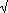
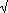

Then summing the coordinates of u and v and using |a + b|
 |a| + |b| in R gives the triangle inequality in d1.
|a| + |b| in R gives the triangle inequality in d1.
For d2 : |u + v|2 = |u|2 + |v|2 + 2 u.v and since u.v = cos( )|u||v| and cos() 1 this is |u + v|2 and the result follows.
)|u||v| and cos() 1 this is |u + v|2 and the result follows.
For d : the maximum of the first coordinates of u+ v maximum of |coordinates of u| + maximum of |coordinates of v| and similarly for the second coordinates.
: the maximum of the first coordinates of u+ v maximum of |coordinates of u| + maximum of |coordinates of v| and similarly for the second coordinates.

On the interval (0, 1) if |x - y| < 1/2 then d(x, y) = |x - y| otherwise it is 1 - |x - y| and so this is the same as the distance measured on a circle of perimeter 1.
The same formula does not define a metric on the closed interval [0, 1] since d(0, 1) = 0 but these two points are not the same.
d(0, pk) = 1/pk and this  0 as k . That is, the sequence (p, p2, p3, ...) 0.
0 as k . That is, the sequence (p, p2, p3, ...) 0.
 Look at the picture:
Look at the picture:
A point on the set d1 = 1 is inside the set d2 = 1 and so d2 d1 . Similarly (since the circle is inside the square) we have d d2 .
 Alternatively, look at a different picture:
Alternatively, look at a different picture:
d2(P, Q) = c  a + b = d1(P, Q).
a + b = d1(P, Q).
Also, both a c and b c and so
d(P, Q) = max{a, b} c.
Without a picture, (a + b)2 = a2 + 2ab + b2 a2 + b2  a + b (a2 + b2) and so d1 d2 .
a + b (a2 + b2) and so d1 d2 .
Also if a b then max{a, b} = a and since a2 + b2 a2 we have (a2 + b2) a and so d2 d .

If (an) v in d1 then given  > 0,
> 0,  N such that n > N d1(an ,v) < (since d1 d2 and d) and so convergence also takes place in d2 and d .
N such that n > N d1(an ,v) < (since d1 d2 and d) and so convergence also takes place in d2 and d .
 One can draw pictures to show that d1 2 d2 and d2 2 d .
One can draw pictures to show that d1 2 d2 and d2 2 d .
(One can of course argue without using pictures too!)
Then if (an)  in d we have:
in d we have:
( > 0) ( n
> 0) ( n  N) ((an, ) < ) d2(an, ) < /2 and d1(an, ) < /2 and so convergence also takes place in d1 and d2 .
N) ((an, ) < ) d2(an, ) < /2 and d1(an, ) < /2 and so convergence also takes place in d1 and d2 .
Similarly, if convergence takes place in d2 it also takes place in d1 .
Combining this with the earlier result, sequences convergent in one of these norms are convergent in all of them.
0.5 and applying f gives the sequence (0.9, 0.9, 0.99, ...) 1 while f(0.5) = 1.
Hence f is not continuous and indeed is discontinuous at any terminating decimal (but continuous elsewhere).
0.5
However, g(0.5) = 0.6111... = 11/18 which is different.